也紀念我們永遠的朋友 李士傑先生（Shih-Chieh Ilya Li）。
有效率的管理帳號與密碼 - KeePass Password Safe
 拜科技發達之賜，以帳號密碼作為身份認證的方式越來越常見，舉凡作業系統登入到各大大小小的網站、論壇、網路銀行，無不用到帳號密碼。
拜科技發達之賜，以帳號密碼作為身份認證的方式越來越常見，舉凡作業系統登入到各大大小小的網站、論壇、網路銀行，無不用到帳號密碼。
但帳號與密碼的管理一直是件很困擾人的事，早期我習慣用同一組密碼通吃所有帳號，但後來發現有時候會用 Email 去申請一些名不見經傳的小論壇或服務，這時如果還用同一組密碼，等於把 Email 的帳號與密碼同時告知對方，但如果臨時起意建立其他密碼，這個密碼也很快就忘了。
於是開始試著使用 Excel 來管理密碼，並且把密碼的強度加大，但使用上真的很不方便，除了開個檔案等老半天，多台電腦多個檔案難以整合，密碼外洩的安全問題也讓人擔憂。直到前陣子開始使用 KeePass，才開始真正落實密碼管理，不管是建立新密碼、管理分類、自動填入，KeePass 都能輕鬆幫你達成。
使用 KeePass 的優點
KeePass 是一套開放原始碼的密碼管理工具，有別於使用紙本或文書軟體來記載密碼，它的一些功能，加強了密碼管理的安全性與便利性，以下列出幾個值得人稱道的優點：
◎ 開啟密碼檔的安全機制
KeePass 將你的密碼資料儲存於一個加密檔案 (資料庫) 中，當您想打開這個檔時，必須輸入密碼才能開啟。如果你懶的記憶密碼，KeePass 貼心的幫您準備另一種機制，建立一把金鑰檔案，當開啟密碼檔案時，必須比對金鑰檔才能正確開啟。當然如果你同時使用兩種安全機制，安全度會大大提升。
◎ 密碼資料庫的加密
KeePass 的密碼檔案是經過演算法加密的，你可以從設定中選擇加密碼方式，包含 Advanced Encryption Standard (AES, Rijndael) 與 Twofish 兩種。你甚至可以增加循環加密次數，讓破解檔案變成不可能的任務。
◎ 建立高強度密碼
如果你不知道該如何建立自己的密碼，KeePass 提供您一個功能強大的密碼產生器，你可以任意自訂密碼長度，密碼中包含的字元，比如數字、大小寫字母、底線、減號等，甚至你可以用搜尋亂數的方式來建立密碼，當你滑數移動或鍵盤隨意鍵入，都會自動產生亂數來建立密碼，讓您不用再費神去構思高強度的密碼。
◎ 直覺且安全的視窗管理
在 KeePass 中，有非常直覺的管理技面，你可以為密碼分門別類，只要點擊滑鼠兩下，即可開始編輯設定密碼，配和熱鍵快速將密碼儲存於剪貼簿中。KeePass 設有自動清除剪貼簿密碼的功能，只要設定的時間一到，在剪貼簿的密碼會自動清除。除此之外，它還有自動鎖檔功能，當你停止使用 KeePass 一段時間，它會自動鎖定檔案，你必須重新輸入密碼或比對金鑰才能再次開啟。
◎ 自動填入功能
KeePass 中有多組熱鍵，包含複製貼上等，讓你快速填入密碼。此外它還有比對應用程式的功能，如 Firefox 瀏覽器、Internet Explorer 瀏覽器、MSN 等，讓你儲存的密碼認得，它應該關連哪一個應用程式。下次要登入時，只要將指標停在登入欄位中，按下熱鍵，密碼將自動填入並登入。
安裝與中文化
軟體名稱 KeePass Password Safe
軟體版本 1.14
軟體授權 GNU General Public License (GPL)
官方網站 https://keepass.info/
軟體下載 https://keepass.info/download.html
中文化 https://keepass.info/translations.html
KeePass 可下載兩種版本的安裝檔，一種是 1.X 版本，另一種為 2.X 的 Beta 版。2.X 版本目前還在測試階段，穩定性較不如 1.X 系列，建議使用者下載 1.X 版本安裝，可選擇的外掛模組也較多，安裝方式依照指示安裝，一步步安裝即可。
中文化也相當簡單，在官網的語言頁面中，下載繁體中文版的語言檔 (選 1.X 版)，將下載的 Zip 檔解壓縮至安裝目錄下 (預設為 C:\Program Files\KeePass Password Safe)，可發現多了一個 TraditionalChinese.lng 檔，開啟 KeePass，點選 【View】→【Change Language】，可發現繁體中文選項，點選後重新啟動軟體即完成中文化。
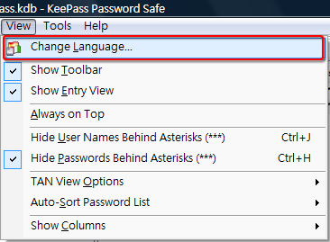
建立你的密碼資料庫檔案
點選開新檔案圖示，建立你的第一個密碼資料庫檔案。
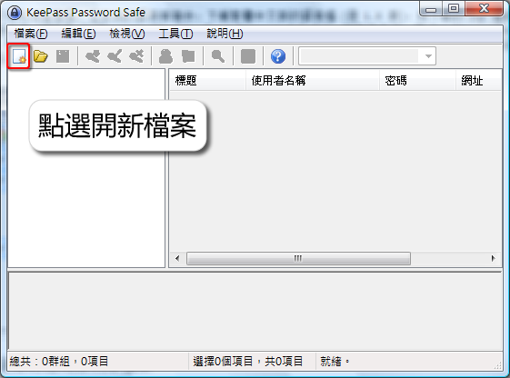
在建立新檔時，KeePass 會詢問你開啟檔案的保護方式，你可以選擇輸入一組密碼，或者使用金鑰檔案，最安全的方式是同時使用密碼與金鑰檔的雙重保護，每當你要開啟檔案時，就會被要求輸入密碼與配對金鑰。
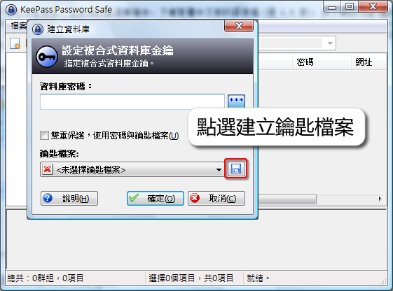
密碼設定很簡單，但是如何產生鑰匙檔案呢？首先你必須點選圖示指定鑰匙檔案位置和名稱，確定後，KeePass 會開啟蒐集亂數視窗，利用亂數蒐集的方式建立金鑰檔案，它會自動搜詢鍵盤或滑鼠的輸入來產生亂數，你可以在鍵盤方塊中隨便亂輸入文字，也可以使用滑鼠輸入，滑鼠亂數蒐集的方式相當有趣，當你點選開始按鈕，可以在雜湊區塊中任意移動滑鼠，隨著你滑鼠的移動，下方的橫條會逐漸被填滿。
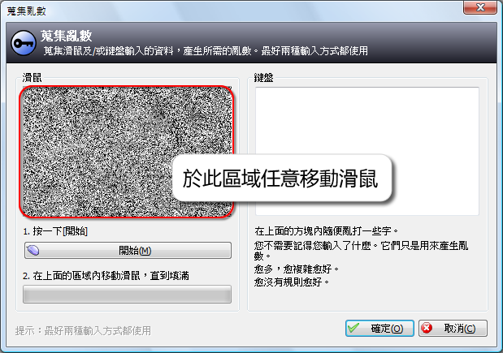
在建立金鑰檔案後，使用者必須小心保留此檔案，建議一旦建立完成便備份一份至隨身碟，或其他的裝置，往後任何開啟或編輯檔案都得靠它了，若不小心遺失，幾乎不太可能重建檔案。
建立你的第一組密碼
點選新增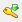圖示，可開啟建立新密碼的視窗，從欄位中可窺知 KeePass 強大的功能，除了必填的密碼外，標題、使用者名稱、群組分類、網址、連備註都是相當重要的欄位 (在備註中可填入關聯的應用程式訊息)。
如果你輸入的是舊密碼，可借此機會觀察自己設的密碼強度，如果不滿意密碼強度，建議你，趁此機會作一次密碼大掃除，將一些容易被猜到或破解的密碼，一次更新 (變更密碼請小心，方式須依據登入網站或系統說明)。
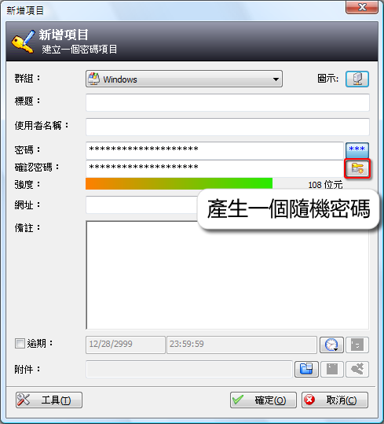
點選產生隨機密碼圖示，開啟密碼產生器，著手建立一組高強度密碼。在密碼產生器中，你可以自訂密碼長度，各大網站中對密碼長度的限制不同，在建立密碼時要特別注意，不要興沖沖的建立一組長度超長的密碼，卻不符合網站規定。除了長度外，還可以自訂要出現的字元，密碼顯示的樣式，KeePass 密碼產生器提供很大的彈性，讓用戶自行建立出屬於自己的密碼。
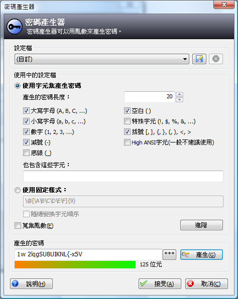
快速自動填入
在 Keepass 中，快速自動填入帳號密碼的方式有兩種，分別搭配兩組能簡化登入流程的熱鍵：Ctrl + V 與 Ctrl + Alt + A。如果你要快速上手 KeePass ，建議你將此兩組熱鍵記下來，以下說明兩組熱鍵自動登入方式：
◎ Ctrl + V
Ctrl + V 屬於較直覺的自動登入方式，就如同 Windows 的熱鍵 Ctrl + V ，它略帶有貼上的意涵。當你遇到登入畫面時，先將游標停於登入的欄位中。
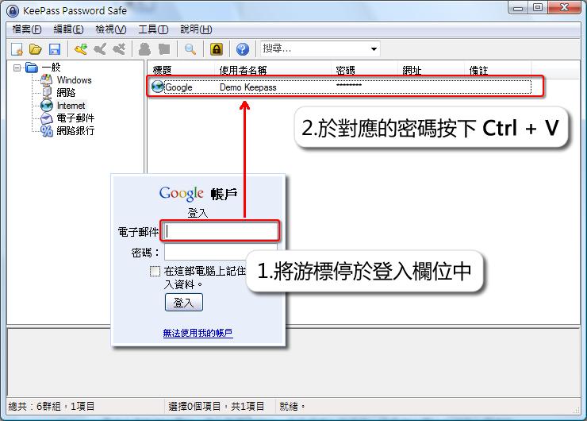
回到 KeePass 後，點選對應的密碼項目，並按下 Ctrl + V，此時 KeePass 會快速的回到登入介面，自動的填入帳號密碼，並直接登入，從按下熱鍵到成功登入系統，只是彈指之間的光景。
Ctrl + V 還可以搭配網址欄位，填入對應的網址，做自動填入的動作，但是網址欄位必須填入複雜的 Placeholders，如：cmd://{FIREFOX} "https://www.yoursite.com" ，來指定瀏覽器和網址，甚至包含一些替代字元，有興趣的人可至官網文件查詢。
◎ Ctrl + Alt + A
個人常用的登入方式為 Ctrl + Alt + A，以實際使用而言，它比 Ctrl + V 方便一點，但它的先前設定比較煩雜。你必須先在每個密碼項目中註明要關聯的應用程式視窗，以常見的瀏覽器而言，無論是使用 Firefox 或是 IE 都必須將關聯語法寫於備註中。比較簡單的做法是，在新增密碼時，點選【工具】→【自動輸入：選取目標視窗】，選擇視窗。
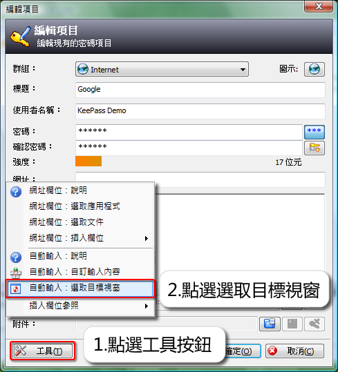
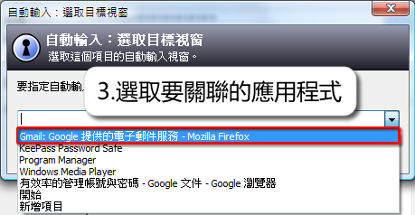
當完成視窗的選取後，你會看到備註中多了一行
Auto-Type-Window: Gmail: Google 提供的電子郵件服務 - Mozilla Firefox
在這邊要注意的是，視窗是可以複選的，意即你可以同時關聯 Firefox、IE 以及其他瀏覽器，甚至如果你使用的帳號密碼相同，亦可加入新的視窗，以常見的 Google 為例，你可以再加入
Auto-Type-Window: iGoogle - Mozilla Firefox
因為不管是 iGoogle 或是 Gmail 所使用的帳號密碼都是相同的。完成後，通常會將 KeePass 常駐在工作列中，一旦遇到登入頁面時，把指標停於登入欄位中，按下 Ctrl + Alt + A，KeePass 會將帳號密碼迅速填入，且直接登入。以下用動畫示範利用 Ctrl + Alt + A 快速填入帳號密碼。
KeePass 自動填入功能
跨平台同步你的密碼
如果使用者有多台電腦時怎麼辦？辦公室一台，家裡一台，筆電又一台，只要新增一筆資料，就要費事的將資料轉換其他台電腦。如何同步多台電腦的密碼，是使用 KeePass 上一個很大的課題，雖然 KeePass 的外掛中， KeePassSync 已經有同步密碼的功能，但它只適用 KeePass 2.x 版本，且外掛本身也只到 alpha 階段，並不是整合多台電腦最佳選擇。個人在此推薦一種整合方案，事實上，多個國外介紹 KeePass 的網站上，也有提到相同的做法，那就是 KeePass + Dropbox。
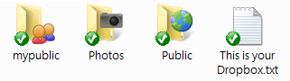
Dropbox 是一種線上儲存，同步，分享檔案的工具，雖然它的軟體也為開放原始碼，但實際上它屬於一種服務，使用者必須到 Dropbox 官網申請帳號、下載軟體，當然這些都是免費的，一般申請後立即擁有 2G 的網路空間。安裝完 Dropbox 後，使用者可以在自己的電腦建立一個分享資料夾，在這個資料夾中可以建立各種不同權限子資料夾，有公開的，有私人的，也可以指定分享用戶。
只要將檔案放在分享資料夾下，軟體自動會同步所有你安裝過 Dropbox 的各台電腦，還包括網路空間的檔案，跟一般的網路空間相比，它強調的不是下載速度，而是方便性，所以它並不適合檔案過大的檔案，而是適合於檔案小，變動率高，有同步需求的檔案，KeePass 的密碼檔正符合這個條件，在加上 KeePass 與 Dropbox 都是同時跨 Windows、Linux 和 Mac 三平台的軟體，不管你安裝哪種作業系統，都可以達密碼同步的效果。
參考文獻
Eight Best KeePass Plug-Ins to Master Your Passwords
Dropbox & KeePass: The perfect cross-platform password management system
https://www.getdropbox.com/
https://keepass.info/
https://tw.opensourceinstall.org/keepass
Special


Address：No.128, Sec.2, Academia Rd., Institute of Information Science, Academia Sinica, Nangang District, Taipei City 11529, Taiwan (R.O.C).
Privacy Policy. Terms-of-use